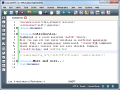

Welcome to TeXstudio
TeXstudio is an integrated writing environment for creating LaTeX documents. Our goal is to make writing LaTeX as easy and comfortable as possible. Therefore TeXstudio has numerous features like syntax-highlighting, integrated viewer, reference checking and various assistants. For more details see the features.
TeXstudio is open source and is available for all major operating systems.
News
| 2015-10-02 | TeXstudio has been chosen as sourceforge Project of the Month. |
| 2015-09-16 | The new release TeXstudio 2.10.2 is available. This is a bugfix release (see changelog). |
| 2015-09-10 | The new release TeXstudio 2.10.0 is available (see changelog). Linux builds are only provided for distributions which allow Qt5 builds. This mainly affects Centos 6, Ubuntu 12.04 and OpenSuse 11.3. |
| 2015-09-10 | TeXstudio uses the service of Transifex to reduce difficulties to translate texstudio in your mother tongue. Please participate to increase the number of tranlations. |
| 2015-08-16 | TeXstudio is one of the candidates for the SourceForge project of the month. Vote now! |
| 2015-06-29 | TeXstudio has been chosen as one of the Featured Projects of the week on sourceforge.net |
| 2015-03-24 | The new release TeXstudio 2.9.4 is available. This is a bug fix release mainly for OSX and Linux. The shortcuts for moving the cursor get messed up if you use txs 2.9.2 with a non-english language and change something in the options. To remedy the problem, you need to edit .config/texstudio/texstudio.ini and delete the keys "Editor%20Key%20Mapping%20New". Sorry for the inconvenience. |
| 2015-03-22 | The new release TeXstudio 2.9.2 is available (see changelog). |
| 2015-03-06 | The new release TeXstudio 2.9.0 is available (see changelog). |
| 2015-02-17 | There are preview builds of the upcoming 2.8.10 release available for Windows and Linux (tagged as 2.8.9). It also continues to be a Featured Project this week. |
| 2015-02-10 | TeXstudio has been chosen as one of the Featured Projects of the week on sourceforge.net |
| 2014-12-07 | TeXstudio has been chosen as one of the Featured Projects of the week on sourceforge.net |
| 2014-12-04 | The new release TeXstudio 2.8.8 is available (see changelog). |
| 2014-10-26 | The new release TeXstudio 2.8.6 is available (see changelog). |
| 2014-09-08 | The new release TeXstudio 2.8.4 is available (see changelog). |
| 2014-07-25 | The new release TeXstudio 2.8.2 is available (see changelog). |
| 2014-06-21 | The new release TeXstudio 2.8.0 is available (see changelog). |
| 2014-03-16 | The new release TeXstudio 2.7.0 is available (see changelog). |
| 2014-02-10 | TeXstudio has been chosen as one of the Featured Projects of the week on sourceforge.net |
| 2013-11-02 | The new release TeXstudio 2.6.6 is available to fix some bugs, e.g. the home/end keys. |
| 2013-10-20 | The new release TeXstudio 2.6.4 is available. It fixes bugs and adds some features. |
| 2013-08-28 | We have migrated our version control system from SVN to Mercurial. The SVN repository remains, but won't be updated any longer. From now on, you can obtain the latest source code from our Mercurial repository. |
| 2013-08-17 | TeXstudio has been elected as SourceForge Project of the Month. You can read an interview there. |
| 2013-07-14 | The new bug fix release TeXstudio 2.6.2 is available. |
| 2013-06-15 | The new release TeXstudio 2.6.0 is available. |
| 2013-04-03 | TeXstudio was one of the candidates for the SourceForge Project of the Month. |
| 2013-03-18 | TeXstudio is one of the Featured Projects of the week on sourceforge.net, again :) |
| 2013-02-04 | TeXstudio has now been downloaded more than 200 000 times from sourceforge! |
| 2013-01-08 | The new bug fix release TeXstudio 2.5.2 is available. |
| 2012-11-22 | The new release TeXstudio 2.5.1 is available. |
| 2012-11-13 | TeXstudio is one of the Featured Projects of the week on sourceforge.net |
| 2012-10-17 | The new release TeXstudio 2.5 is available. |
| 2012-09-02 | The new release TeXstudio 2.4 is available. |
| 2012-03-27 | TeXstudio got a new website design. |
| 2012-02-06 | The new release TeXstudio 2.3 is available. |
| 2011-07-20 | The new release TeXstudio 2.2 is available. |
| 2011-06-15 | TexMakerX is now called TeXstudio. |
| 2011-03-19 | The new release TexMakerX 2.1 is available which adds again new features and fixes some bugs. |
| 2010-11-29 | The new release TexMakerX 2.0 is available which adds new features and fixes some bugs. |
| 2010-07-20 | The new release TexMakerX 1.9.9a is available which adds new features and fixes some bugs. |
| 2010-05-06 | The new release TexMakerX 1.9.9 is available which adds new features and fixes some bugs. |
| 2009-11-25 | The new release TexMakerX 1.9.3 is available and fixes several bugs. Also the old releases have been downloaded ten thousand times so far. |
| 2009-10-26 | The new release TexMakerX 1.9. is available which adds several new features and fixes some bugs. |
| 2009-05-06 | The second release TexMakerX 1.8.1 is available which fixes several bugs and add some new features. |
| 2009-04-03 | TexMakerX 1.8 has now been downloaded one thousand times. |
| 2009-02-22 | The first release TexMakerX 1.8 is finished. |
Features
Comfortable Editing
- Multi-Cursors
- Auto completion
- More than 1000 mathematical symbols
- Bookmarks
- Link overlay
- Assistants for images, tables, formulas, ...
- Drag & drop support for images
- Table-formatting
Edit multiple positions at the same time. Vertical blocks can even be copied and pasted.
Suggests possible LaTeX commands as you type. There is a tooltip help explaining the command.
Completion works also for references and bibliography entries.
Quick access to more than 1000 mathematical symbols.
Use bookmarks too keep references to important places in your text and to navigate there quickly.
Tooltips show a preview of the code position.
Filenames, references and citations turn into links when moving the mouse over them while holding <Ctrl>.
Also here, tooltips show a preview of the code position.
Generate blocks of code using assistants without the need for detailed LaTeX knowledge.
When you drag an image on the editor the image assistant opens. From there it's just one more click to have the code for the image inclusion. Of course, we try to make the paths relative. This also works with multiple images.
You can copy / paste / insert new table columns with a single click.
The table-autoformatter aligns the table code.
Keep The Overview
Inline Checking
- Structure view
- Code folding
- Advanced syntax highlighting
- Interactive spellchecker
- Interactive grammar checker
- Interactive reference checker
- Clear display of LaTeX errors and warnings (in editor and as list)
Advanced build system
Error Highlighting
- Built-in support for various LaTeX compilers, index, bibliography and glossary tools, Latexmk, and many more
- Automatic detection of the need for multiple LaTeX runs
- Run any program you like
- Completely customizable for the creation of the complete document
View The Result
- Integrated PDF viewer with (almost) word-level syncing
- Live-updating inline preview for formulas and code segments
- Tooltip preview for included images
Easy Setup
- Installers or packages available for Windows, Linux and Mac OS X
- Portable USB version available
- Automatic detection of MikTeX, TeX Live, Ghostscript and Standardlatex
- SVN support
You can find more details in the user manual or in the Mercurial Changelog.
Feel free to share your ideas on possible future improvements of TeXstudio.
Download
| Windows | ||||
| Platform | Version | Type | Size | How to install |
|---|---|---|---|---|
| XP/Vista/7/8 | 2.10.4 | Installer | 39.7 MB | download and double click on the installer exe |
| XP/Vista/7/8 | 2.10.4 | Portable (.zip) | 53.5 MB | download and unzip the zip |
| Linux | ||||
| We recommend that you first try to install TeXstudio from the repository of your distribution. Only if TeXstudio is not available there, use the following pre-packaged versions. | ||||
| Platform | Type | Version | Size | How to install |
| Arch Extra | 2.10.4 | i686 Package | 14 MiB | download and open it with your package manager |
| x86_64 Package | 14 MiB | download and open it with your package manager | ||
| CentOS CentOS-6 | 2.10.4 | i686 Package | 17 MiB | download and open it with your package manager |
| x86_64 Package | 17 MiB | download and open it with your package manager | ||
| CentOS CentOS-7 | 2.10.4 | x86_64 Package | 16 MiB | download and open it with your package manager |
| Debian 7.0 | 2.10.4 | amd64 Package | 20 MiB | download and open it with your package manager |
| i386 Package | 20 MiB | download and open it with your package manager | ||
| Debian 8.0 | 2.10.4 | amd64 Package | 14 MiB | download and open it with your package manager |
| i386 Package | 14 MiB | download and open it with your package manager | ||
| Fedora 20 | 2.10.4 | i686 Package | 16 MiB | download and open it with your package manager |
| x86_64 Package | 16 MiB | download and open it with your package manager | ||
| Fedora 21 | 2.10.4 | i686 Package | 16 MiB | download and open it with your package manager |
| x86_64 Package | 16 MiB | download and open it with your package manager | ||
| Fedora 22 | 2.10.4 | i686 Package | 16 MiB | download and open it with your package manager |
| x86_64 Package | 16 MiB | download and open it with your package manager | ||
| ScientificLinux 7 | 2.10.4 | x86_64 Package | 16 MiB | download and open it with your package manager |
| openSUSE 11.4 | 2.10.4 | i586 Package | 14 MiB | download and open it with your package manager |
| x86_64 Package | 14 MiB | download and open it with your package manager | ||
| openSUSE 13.1 | 2.10.4 | i586 Package | 14 MiB | download and open it with your package manager |
| x86_64 Package | 14 MiB | download and open it with your package manager | ||
| openSUSE 13.2 | 2.10.4 | i586 Package | 15 MiB | download and open it with your package manager |
| x86_64 Package | 15 MiB | download and open it with your package manager | ||
| openSUSE Factory | 2.10.4 | i586 Package | 15 MiB | download and open it with your package manager |
| x86_64 Package | 15 MiB | download and open it with your package manager | ||
| openSUSE Tumbleweed | 2.10.4 | i586 Package | 15 MiB | download and open it with your package manager |
| x86_64 Package | 15 MiB | download and open it with your package manager | ||
| xUbuntu 12.04 | 2.10.4 | amd64 Package | 20 MiB | download and open it with your package manager |
| i386 Package | 20 MiB | download and open it with your package manager | ||
| xUbuntu 14.04 | 2.10.4 | amd64 Package | 14 MiB | download and open it with your package manager |
| i386 Package | 14 MiB | download and open it with your package manager | ||
| xUbuntu 14.10 | 2.10.4 | amd64 Package | 14 MiB | download and open it with your package manager |
| i386 Package | 14 MiB | download and open it with your package manager | ||
| xUbuntu 15.04 | 2.10.4 | amd64 Package | 14 MiB | download and open it with your package manager |
| i386 Package | 14 MiB | download and open it with your package manager | ||
| Mac OS X | ||||
| Platform | Version | Type | Size | How to install |
| 10.8+ | 2.10.4 | zip | 42.7 MB | download, and start it. Note: Because we do not have an Apple Developer Account, OS X may complain about an unidentified developer and deny opening TXS. In that case, open the context menu on the TXS icon (Ctrl + Click) and select open. |
| Source Code | ||||
| latest | Mercurial repository | see the wiki | ||
| 2.10.4 | source tarball | 25.8 MB | see the wiki | |
Development Snapshots and Release Candidates
We produce snapshots of the current development status from time to time. These versions will most likely be older than the current tip of the Mercurial repository (so they might not contain the very very recent changes). However they allow you to have a look and try out features that are not yet officially released without the need to compile TeXstudio yourself.
You can obtain binary snapshots of the development status as well as release candidate versions from this directory.
If you are interested to be notified on the most recent changes development snapshots, you can setup the update notification in TeXstudio accordingly (Options → General → Update → Update Level).
Older Versions
Older versions can be found on our sourceforge site.
Participate
As an open source project TeXstudio strongly benefits from an active community.
Use and spread the word
The easiest way to help on the development with TeXstudio is to use it! Furthermore, if you like TeXstudio, tell all your friends and colleagues about it.
In particular we are looking for people who want to try the most recent features before they are officially released. If you are interested download and subscribe to release candidates and development snapshots.
Give Feedback
User feedback is highly welcome. Depending on the type of feedback you may use different channels to communicate.
- Feature requests can be placed in the feature request tracker.
- Bug reports: Please post bug reports in the bug tracker.
- For general discussion and remarks use the TeXstudio forum or mailinglist.
Contribute
You do not necessarily have to be a programmer to help and make TeXstudio even better. There are many ways to contribute.
- Translate TeXstudio into a new language or update an existing translation.
- Design icons.
- Help on improving our website.
- Update or extend the user manual or the wiki.
- Write tutorials or create screencasts.
- Package TeXstudio for your favorite distribution or platform.
- TeXstudio is written in C++/Qt. Programmers are welcome to implement new features or fix bugs.
It is a good idea to announce your plans on the texstudio mailing list. So everybody knows what's going on around TeXstudio and there is no duplicate work. For questions how you can contribute contact one of the developers.
About
TeXstudio has been forked from Texmaker in 2009, because of the non-open development process of Texmaker and due to different philosophies concerning configurability and features. Originally it was called TeXmakerX because it started off as a small set of extensions to Texmaker with the hope that they would get integrated into Texmaker some day. While at some points you can still see that TeXstudio originates from Texmaker, significant changes in features and the code base have made it to a fully independent program.
TeXstudio runs on Windows, Unix/Linux, BSD and Mac OS X. It is licensed under the GPL v2. Being open source, you are free to use and to modify it as you like.
Maintainer:
Benito van der Zander
benito [ΑΤ symbol] benibela.de (please mention "texstudio" in the subject, if you write a mail)
http://www.benibela.de/
TeXstudio Authors:
Benito van der Zander, Jan Sundermeyer, Daniel Braun, Tim Hoffmann
Thanks to
Contributers: Frédéric Devernay, Denis Bitouzé, Jean-Côme Charpentier, Luis Silvestre, Enrico Vittorini, Aleksandr Zolotarev, David Sichau, Grigory Mozhaev, mattgk, A. Weder, Pavel Fric, András Somogyi, István Blahota, Edson Henriques, Grant McLean, Tom Jampen, Kostas Oikinimou, Lion Guillaume, ranks.nl, AI Corleone, Diego Andrés Jarrín, Matthias Pospiech, Zulkifli Hidayat, Christian Spieß, Robert Diaz, Kirill Müller, Atsushi Nakajima, Yuriy Kolerov, Victor Kozyakin, Mattia Meneguzzo, Andriy Bandura, Carlos Eduardo Valencia Urbina, Koutheir Attouchi, Stefan Kraus, Bjoern Menke, Charles Brunet, François Gannaz. (Contact us if you are missing or don't want to be mentioned.)
for hosting TeXstudio.
And to all open source projects from which TeXstudio uses code or that inspired features of TeXstudio.